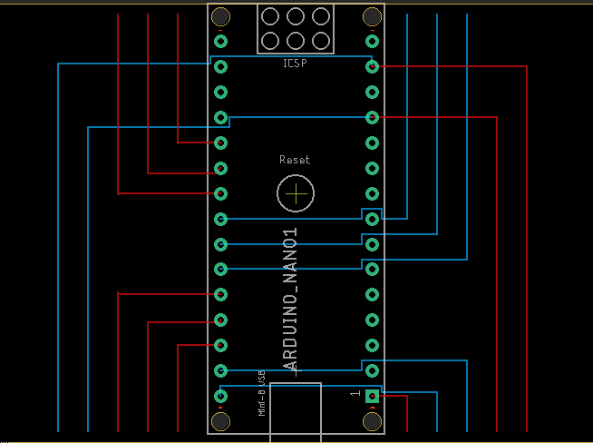
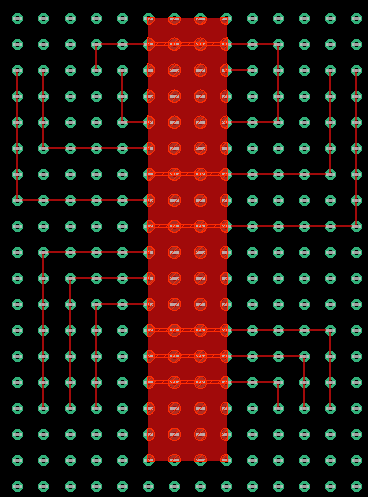
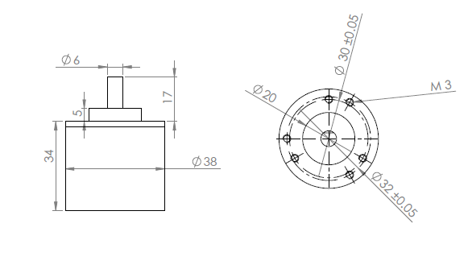

Understanding the circuit used for the project¶
1.0. Diagrams¶
{kind=link}
Fig 1: Arduino nano’s connection to rotary encoders (connections going below) & motor drivers (connections going above).
{kind=link}
Fig 2: PCB design of fig 1.
2.0. Components used for the project¶
- Arduino Nano
- Rotary Encoders
- Motor Drivers (L293D)
- DC Motors
- LIPO Batteries
3.0. Specifications of the components used¶
3.1. Arduino Nano¶
3.2. Rotary Encoders¶
3.2.a. Rotary quadrature encoder 600PPR/2400CPR¶
| General Specifications | Electrical Specifications | ||
| Outer Diameter (mm) | 38 | Working Voltage(V) | 5-24V | ||
| Shaft Type | D | Working Current (mA) | <=60 mA |
| Shaft Diameter (mm) | 6 | Output wave | Square wave |
| Phase | A, B | Frequency (KHz) | 0-200 |
| Operational Temperature | 10 ~ 70 degrees | Max RPM | 5000 |
| Protection Degree | IP 54 | Weight (gms) | 250 |
3.2.b. Power and input terminal assignment¶
| Terminal No | Terminal Name | Wire Color | Description |
| Terminal 1 | Enc A | White | Quadrature encoded output A |
| Terminal 2 | Enc B | Green | Quadrature encoded output B |
| Terminal 3 | VCC | Red | VCC should be connected to +5V |
| Terminal 4 | GND | Black | GND should be connected to negative of supply |
3.2.c. Diagrams¶
Fig 3: Rotary Encoder (All dimensions in mm)
4.0. Connections¶
4.1. Arduino nano & motor driver connections¶
D2 & D3 pins which are Interrupt pins 0 & 1 are connected to encoder B’s of rotary encoders.
D4 & D5 are connected to encoder A of the rotary encoders respectively.
D8, D9 & D10 are given as inputs and enable pin one of the motor drivers respectively.
D11, D12 & D13 are given as inputs and enable pin to the other motor driver respectively.
Common 5V and ground connections are made.
DC Motors are connected to the output pins of the motor drivers.
LIPO Batteries are connected to drive the DC motors.